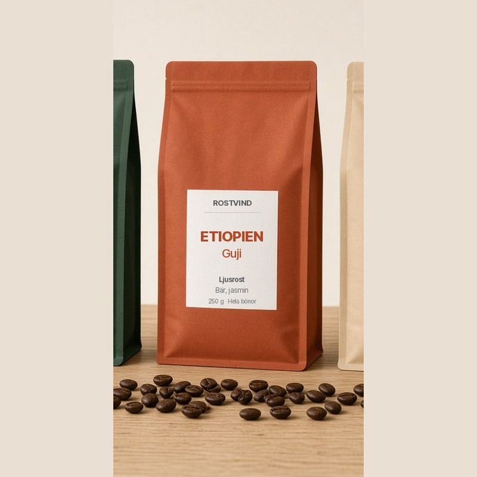

Kaffe / Etiopien Guji

Ljusrost · 250 g
Etiopien Guji
169 kr
Ljust rostad för att lyfta ursprunget. Fruktig och blommig – kaffet för dig som vill smaka något nytt.
Blåbär, jasmin, bergamottSmaknoter
Guji, Etiopien · tvättadUrsprung
Pour-over, Aeropress, bryggarePassar till
Skickas inom 2 vardagar · Fri frakt från 399 kr · Prenumerera och spara frakten